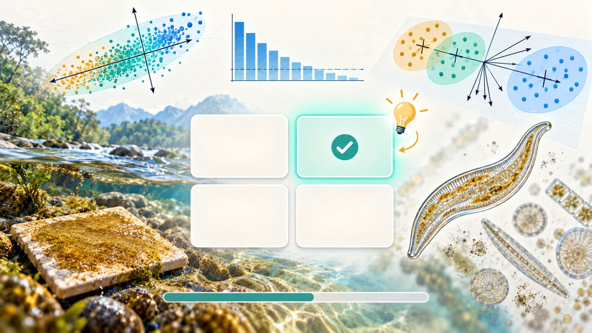

Cuestionario 1 · Análisis de Componentes Principales
Bioestadística y Diseño Experimental · Semana 3 · 2026-II
Instrucciones
Este cuestionario acompaña el Taller 7 · Análisis de Componentes Principales de la Semana 3. Son 12 preguntas de opción múltiple basadas en las Partes 1 a 5 del taller y en el estudio de caso: escalas y estandarización, transformación previa, redundancia entre variables, autovalores y criterios de retención, contribuciones y signo de los ejes, escalamientos del biplot, elipses de confianza, envfit() del tributario y de los géneros (pruebas múltiples) y el PCA que no aporta en el ambiente del mesozooplancton.
Cada pregunta tiene una pista opcional y, al responder, una explicación breve; se recomienda usarlas para repasar, no solo para obtener una calificación. El orden de las opciones cambia en cada intento. Es una práctica sin nota; la misma práctica está en Moodle (Cuestionario1_T7) y sirve de repaso antes de elegir y reportar la ordenación del estudio de caso (A3).
Pregunta 1 de 12
Referencias
Las preguntas de este cuestionario son de elaboración propia para este curso, a partir de las bases de datos del Taller 7 (Osorio Ávila et al., 2015, y Vargas-Ospina et al., 2025); no reproducen ejercicios ni datos de las fuentes citadas en el taller.